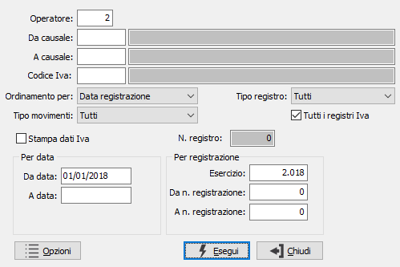
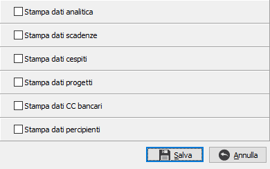

Lista prima nota
Il programma consente l’elaborazione e la stampa, anche in anteprima, di un report della prima nota a partire dal numero di registrazione o dalla data indicata dall’operatore, con possibilità di limitare l’elaborazione ai soli movimenti inseriti da uno specifico utente.

OPERATORE: Eventuale codice dell'operatore che ha effettuato la registrazione dei movimenti. Viene proposto in automatico il codice dell'operatore che lancia il programma. Se si desidera effettuare la stampa di tutti i movimenti indipendentemente dall’operatore che li ha inseriti, digitare il codice “0”.
DA CAUSALE: Inserire l’eventuale codice della causale contabile da cui si desidera iniziare la selezione della stampa della prima nota. Confermando a vuoto, la stampa inizia con la prima causale valida. Sul campo è attivo lo zoom F9
A CAUSALE: Inserire l’eventuale codice della causale contabile con cui si vuole concludere la selezione di stampa. Confermando a vuoto, la stampa si conclude con l’ultima causale valida. Sul campo è attivo lo zoom F9
CODICE IVA: consente di ricercare i movimenti per codice Iva; sul campo è attivo lo zoom F9
ORDINAMENTO PER: Combo box per definire i criteri di ordinamento. Valori ammessi: Data registrazione (la stampa viene effettuata in ordine di data di registrazione); Numero registrazione (la stampa viene effettuata in ordine progressivo di riferimento di prima nota).
TIPO MOVIMENTI: Combo box per definire i criteri di selezione dei movimenti contabili da stampare. Valori ammessi: Tutti (vengono stampati tutti i movimenti contabili); Esclusi i movimenti sospesi (vengono stampati solo i movimenti contabili effettivi); Solo i movimenti sospesi (vengono stampati solo i movimenti contabili provvisori da validare, identificati dal flag “sospeso”)
STAMPA DATI IVA: Se spuntato la stampa realizzata riporta le informazioni riguardanti l'Iva: codice, imponibile, imposta.
TIPO REGISTRO: combo box per definire il tipo di registro Iva per cui stampare i movimenti. Valori ammessi:
Tutti
Libro giornale
Vendite
Vendite in sospensione di imposta
Corrispettivi
Acquisti
Acquisti in sospensione di imposta
TUTTI I REGISTRI: indica di stampare i movimenti di tutti i sezionali IVA (casella con segno di spunta); se si lascia la casella vuota saranno stampati solo i movimenti del registro riportato nel campo "N. registro".
N. REGISTRO: indica il sezionale del registro IVA da elaborare; valido solo se il campo precedente (Tutti i registri) non è spuntato.
DA DATA: informazione significativa in caso di ordinamento per data. Inserire l’eventuale data di inizio della selezione dei movimenti da stampare. Confermando a vuoto, la selezione inizia con la prima data valida dell’esercizio in corso.
A DATA: informazione significativa in caso di ordinamento per data. Inserire l’eventuale data di fine della selezione dei movimenti da stampare. Confermando a vuoto, la selezione termina con l’ultima data valida dell’esercizio in corso.
ESERCIZIO: informazione significativa in caso di ordinamento per articolo contabile. Indicare il codice numerico dell’esercizio contabile di cui si vuole effettuare la stampa della prima nota.
DA N. REGISTRAZIONE: informazione significativa in caso di ordinamento per numero registrazione. Indicare l’eventuale numero di movimento contabile da cui si vuole iniziare la stampa. Confermando a vuoto, la stampa inizia dal primo movimento valido per l’esercizio indicato.
A N. REGISTRAZIONE: informazione significativa in caso di ordinamento per numero registrazione. Indicare l’eventuale numero di movimento contabile con cui si vuole terminare la stampa. Confermando a vuoto, la stampa termina con l’ultimo movimento valido per l’esercizio indicato.

Consente di richiamare la finestra relativa ai moduli collegati; per ogni modulo presente è disponibile una casella di spunta, se attivata nell'elenco dei movimenti saranno comprese anche le informazioni relative all'opzione scelta. Se viene premuto il pulsante Annulla le opzioni si azzerano e la finestra si chiude.
Inseriti tutti i parametri, premendo il bottone Esegui viene lanciata la stampa.